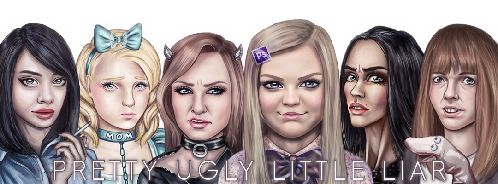

Hello everyone,
Sorry the site went down earlier than anticipated, the host pulled the plug sooner than I thought it would.
PULL has served a good purpose for many years--it's been a safe place where people could express themselves. However, I'm afraid that there are some deep issues with its culture that I can't fix.
I've been trying to find a new administrator for a long time, it hasn't worked out. I've given splinter sites time and support to form but they haven't worked out.
I've decided closing PULL is the best option. I'm going to retain the domain because I truly believe the site should not be remade.
Thank you for everything. Serving this community has had its ups and downs, but I'll always be proud of what we made together.
- Nyx, 7/20/2020
